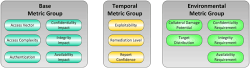

Beyond Unit Tests: Property-based Testing
Expressing Program Behaviours
In a previous article, we looked at the use of EvoSuite framework for automated test case generation in Java. As mentioned in that article, EvoSuite uses search-based and constraint-based methods for generation of test cases. These methods are guided by coverage criteria (e.g. branch coverage) and ability to explore different paths in the program. The test cases generated by these methods may not capture the intended behavior of the program. In today's article we will see how we can generate test cases that capture certain behaviors about programs. This can be done using property-based testing.
JUnit-QuickCheck is a library that provides property-based testing for Java programs. It is inspired by the QuickCheck library for Haskell that first pioneered this approach for automated testing. The library makes use of JUnit's Theory feature to support parameterized test cases. These test cases allow the developer to specify the property that the method under test should satisfy. JUnit-QuickCheck then uses randomly generated values to test the property. The following example shows how to use the @Theory annotation to specify a test method:
@RunWith(Theories.class)
public class PropertyJUnitTest {
@Theory public void testEncodeBase64(@ForAll byte [] src){
byte [] ec = EncodeBase64.encode(src);
byte [] dec = EncodeBase64.decode(ec);
Assert.assertArrayEquals(src,dec);
}
}This unit test is calling the encode and decode functions of the EncodeBase64
class from the wox cross platform serialization library.
The property of interest here is that encode is invertible, with decode as its inverse, i.e. x = decode(encode(x)). In other words, we want to check that encoding a byte array and then decoding it back leads to the same byte array. The assertArrayEquals at the last line ensures that this property is satisfied. This property is tested by randomly generating a large number (100 by default) of byte arrays and calling the testEncodeBase64 with those values as input. The @ForAll annotation is provided by the JUnit-QuickCheck library and takes care of generating the appropriate random inputs.
If there are two inputs to the method, then all possible combinations of the randomly generated inputs are tested. In order to avoid running so many tests we can specify constraints on the input as shown below:
@Theory
public void testEncodeBase64withLength(@ForAll byte [] src) {
assumeThat(src.length, greaterThan(32));
byte[] ec = EncodeBase64.encode(src);
byte[] dec = EncodeBase64.decode(ec);
Assert.assertArrayEquals(src,dec);
}The assumeThat ensures that only byte arrays with length greater than 32 are generated.
The library already comes with generators for all primitive Java types and there is also a separate module junit-quickcheck-guava containing generators for Guava types. However, if we need to generate inputs of custom type we need to provide a generator. It can be done by extending the Generator class
and overriding the generate method. The following example shows one possible way to generate random inputs of the org.jdom2.Element type.
public class ElementGenerator extends Generator<Element> {
public ElementGenerator() {
super(Element.class);
}
@Override
public Element generate(SourceOfRandomness rand, GenerationStatus gs) {
Element e = new Element(RandomStringUtils.randomAlphabetic(16));
int numofAttr = rand.nextInt(8);
for(int i=0; i<numofAttr; i++) {
e.setAttribute(RandomStringUtils.randomAlphabetic(8),RandomStringUtils.randomAlphabetic(8));
}
e.addContent(RandomStringUtils.randomAlphabetic(rand.nextInt(16)));
return e;
}
}Every time the generate method is called, it creates a random alphabetic string that is used as the name of the element and adds up to 8 random attribute values in it. To use this generator for the Element type we need to specify the class with the @From annotation after the @Forall in the test method as shown below:
@Theory
public void testElement2String(
@ForAll @From(ElementGenerator.class) Element e)
throws Exception {
String s = element2String(e);
// ...
}The use of custom generators allows us to use property-based testing for arbitrary classes and methods with little effort. The source code for all the tests is available under the wox repository on GitHub. In addition, some other frameworks (under active development) providing similar functionality for Java are Quickcheck and ScalaCheck. However, JUnit-QuickCheck is the only one to use the Theory support in JUnit which makes it a lot easier to integrate in the development workflow.
Checking Informal Specifications
Property-based testing shifts our focus from simple assertions about values to logical properties that code should satisfy. Another use is checking informal, natural-language specifications; translating these statements into logical terms allows us to leverage a property-based test to check them.
One of the building blocks we implemented building SourceClear was a library for interpreting CVSS, a set of metrics used to assess the severity of software vulnerabilities.
The textual encoding of a set of CVSS metrics is called a vector:
AV:A/AC:L/Au:N/C:P/I:P/A:C/E:ND/RL:OF/RC:ND/CDP:H/TD:M/CR:ND/IR:ND/AR:HVectors are structured, consisting of several metric groups.

Furthermore, there are many rules governing the relationships between metric groups and values, specified informally. Both of these make it a prime candidate for property-based testing.
We start by defining data structures and generators for vectors:
class CVSSVector {
BaseVector baseVector;
TemporalVector temporalVector;
EnvironmentalVector environmentalVector;
}public class CVSSVectorGenerator extends Generator<CVSSVector> {
@Override
public CVSSVector generate(SourceOfRandomness rand, GenerationStatus gs) {
return gen().fieldsOf(CVSSVector.class).generate(rand, gs);
}
}As this library parses and pretty-prints vectors, we test a simple property of the implementation: that parsing is invertible, with pretty-printing as its inverse:
@Property
public void cvssVectorInvertible(CVSSVector cvssVector) throws ParseException {
assertEquals(cvssVector, new CVSSVector(cvssVector.toString()));
}So far so good.
CVSS also defines a means of turning a vector into a numeric score, allowing vectors to be ordered (and vulnerabilities prioritized). We transcribe the equations faithfully, then test a simple property from the spec relating the scores of the base and temporal metric groups:
/**
* ... the temporal equation will combine the temporal metrics with the base score
* to produce a temporal score ranging from 0 to 10. Further, the temporal score will
* produce a temporal score no higher than the base score, and no greater than 33% lower
* than the base score.
*/
@Property
public void temporalScoreRange(BaseVector baseVector, TemporalVector temporalVector) throws ParseException {
double temporal = temporalVector.getScore(baseVector);
assertTrue(0 <= temporal && temporal <= 10);
assertTrue(temporal <= baseVector.getScore());
double baseThreshold = baseVector.getScore() * (1 - 0.33);
assertTrue(temporal <= baseThreshold);
}
Surprisingly, the third assertion fails and a counter-example is printed:
java.lang.AssertionError: Property temporalScoreRange falsified.
Args: [AV:A/AC:L/Au:N/C:P/I:P/A:N, E:H/RL:OF/RC:UR]Our first thought is that the implementation is wrong in some way. Perhaps floating-point error? We check two other implementations of CVSS2 scoring and see the same result: a base score of 4.8, a temporal score of 4.0, and the impossible assertion 4.0 < 4.8 * (1-0.33).
Looking at the temporal equation analytically, we see that the minimum temporal score is:
temporal = base * min(exploitability) * min(remediationLevel) * min(reportConfidence)
= base * 0.85 * 0.87 * 0.9
= base * 0.67 (2 d.p.)In other words, "33% lower than the base score" is the lower bound. Clearly the spec should have said no smaller than, i.e. base * (1-0.33) <= temporal <= base. Note also the inconsistent uses of higher and greater, and the difficulty of parsing that sentence in general; issues like these illustrate why natural language should be kept to a minimum in specifications.
We continue transcribing and testing, and find a similar error in the computation for the environmental score.
/**
* ... the environmental equation will combine the environmental metrics with the temporal
* score to produce an environmental score ranging from 0 to 10. Further, this equation will
* produce a score no higher than the temporal score.
*/
@Property
public void environmentalScoreRange(BaseVector baseVector, TemporalVector temporalVector,
EnvironmentalVector environmentalVector) throws ParseException {
double environmentalScore = environmentalVector.getScore(baseVector, temporalVector);
assertTrue(0 <= environmentalScore && environmentalScore <= 10);
assertTrue(environmentalScore < temporalVector.getScore(baseVector));
}java.lang.AssertionError: Property environmentalScoreRange falsified.
Args: [AV:N/AC:M/Au:M/C:P/I:C/A:P, E:H/RL:ND/RC:UR, CDP:LM/TD:ND/CR:M/IR:M/AR:M]Here the equations are given in terms of both the base and temporal scores, and consequently the cause of the error is much less obvious, demonstrating the value of the property-based approach.
The interesting thing about this example is that it shows that once the implementation is correct (e.g. comparable to another implementation), the property-based test extends to a test of the specification.
This idea is very similar to grammar-based fuzzing, which we'll cover next.